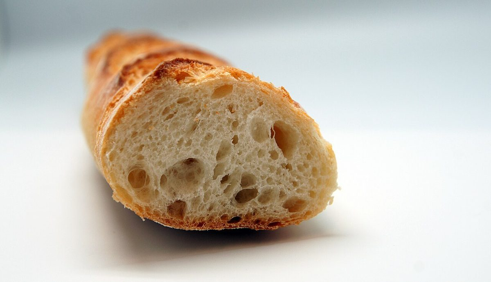

a ― 大きく開く
メニュー
メニューと価格は準備中です。ここに並ぶ写真は、パンのイメージです。
お品書き
準備中
| パンの種類 | 準備中 |
|---|---|
| 価格 | 準備中 |
| ドリンク | 準備中 |
確認できた内容から順に掲載します。最新の情報はInstagramをご覧ください。
パンのイメージ
白い背景に置いたパンたち
写真は国外または撮影地不明のフリー素材で、お店の商品ではありません。





a ― 大きく開く
メニューと価格は準備中です。ここに並ぶ写真は、パンのイメージです。
お品書き
| パンの種類 | 準備中 |
|---|---|
| 価格 | 準備中 |
| ドリンク | 準備中 |
確認できた内容から順に掲載します。最新の情報はInstagramをご覧ください。
パンのイメージ
写真は国外または撮影地不明のフリー素材で、お店の商品ではありません。
